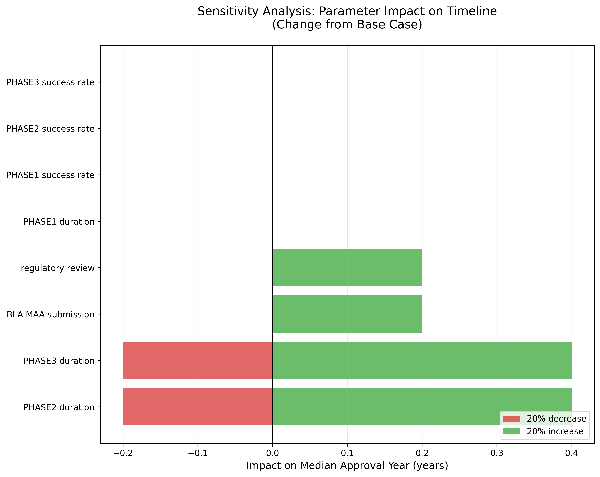
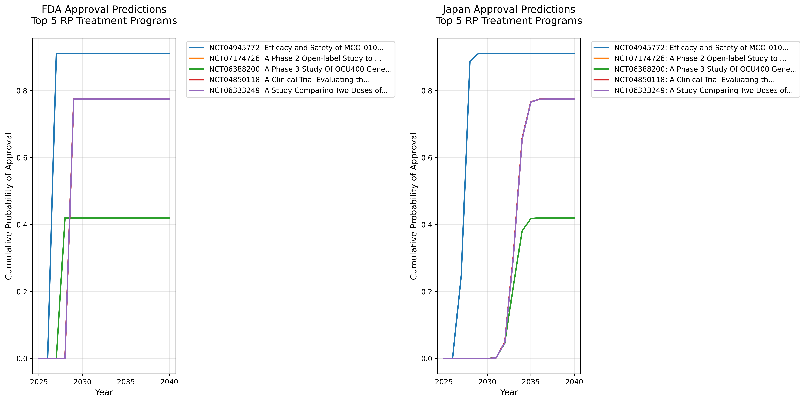
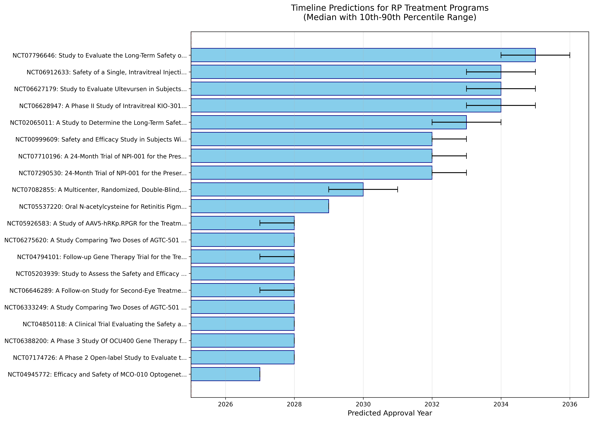

網膜色素変性症（RP）治療開発ロードマップ
最終更新（HTML生成）: 2026年10月02日 05:11
データ取得: ClinicalTrials.gov 2026-10-02 / PubMed 2026-04-13
エグゼクティブサマリー
本レポートは、網膜色素変性症（Retinitis Pigmentosa, RP）の治療法開発状況を定量的に分析し、効果的な治療法がいつ頃利用可能になるかを予測したものです。
3分でわかる
網膜色素変性症の治療は「2種類」あります。
- A: 進行を止める/遅らせる
視力を取り戻すものではないが、数年内に手が届きうる現実的な希望。神経保護・抗酸化・進行抑制を主に狙います。 - B: 失った視力を取り戻す/根治を目指す
10〜20年スパン。遺伝子補充・編集・細胞移植などで、対象遺伝子や病期が限られることが多いです。
OCU400や光遺伝学（MCO-010/RV-001など）は、進行抑制と機能改善、または視覚再建を狙う中間として扱います。根治や完全な視力回復とは分けて読む必要があります。
まず今すぐできること
- 遺伝子検査で原因遺伝子を確定する
- 自然経過レジストリに登録し、治験の声がかかる側に入る
- jRCT・難病治験ウェブで「網膜色素変性」を定点検索する
型を問わず進行を遅らせる治療が2030年までに日本で使える確率は 16〜26%
小さいほうは網膜色素変性の過去の成績、大きいほうは眼科の薬全体の平均を当てはめた場合です。既存の薬（NAC など）は、最終試験で効果が確認された時点を「使える」と数えています。
帯は2シナリオの幅、太い実線は日本、細い破線は米国です。各年末までに少なくとも1つ届く確率を示します。
下のグラフが高いのは、重い視力低下のある人向けの治療（MCO-010）が日米で承認審査中だからです。物の位置や形が分かるようになることを目指す治療で、失った視力が元どおりになるという意味ではありません。進行を止めたい段階の人に関係するのは上のグラフです。
グラフと同じ数字を表で読む（全20年・両シナリオ・日米）
| 治療と年 | 米国・RP過去 | 米国・眼科平均 | 日本・RP過去 | 日本・眼科平均 |
|---|---|---|---|---|
| 進行を遅らせる治療（原因の遺伝子を問わないもの）・2026年 | 0.00% | 0.00% | 0.00% | 0.00% |
| 進行を遅らせる治療（原因の遺伝子を問わないもの）・2027年 | 0.62% | 2.94% | 0.00% | 0.00% |
| 進行を遅らせる治療（原因の遺伝子を問わないもの）・2028年 | 8.48% | 37.80% | 0.90% | 1.56% |
| 進行を遅らせる治療（原因の遺伝子を問わないもの）・2029年 | 19.12% | 49.41% | 13.93% | 22.47% |
| 進行を遅らせる治療（原因の遺伝子を問わないもの）・2030年 | 21.48% | 51.58% | 16.32% | 26.14% |
| 進行を遅らせる治療（原因の遺伝子を問わないもの）・2031年 | 23.16% | 53.56% | 17.84% | 29.11% |
| 進行を遅らせる治療（原因の遺伝子を問わないもの）・2032年 | 24.05% | 54.74% | 19.19% | 35.37% |
| 進行を遅らせる治療（原因の遺伝子を問わないもの）・2033年 | 24.38% | 55.28% | 21.07% | 44.68% |
| 進行を遅らせる治療（原因の遺伝子を問わないもの）・2034年 | 24.62% | 55.58% | 22.48% | 50.80% |
| 進行を遅らせる治療（原因の遺伝子を問わないもの）・2035年 | 24.91% | 56.08% | 23.36% | 53.23% |
| 進行を遅らせる治療（原因の遺伝子を問わないもの）・2036年 | 25.25% | 56.69% | 24.32% | 54.99% |
| 進行を遅らせる治療（原因の遺伝子を問わないもの）・2037年 | 25.55% | 57.14% | 25.09% | 56.34% |
| 進行を遅らせる治療（原因の遺伝子を問わないもの）・2038年 | 25.75% | 57.38% | 25.59% | 57.14% |
| 進行を遅らせる治療（原因の遺伝子を問わないもの）・2039年 | 25.79% | 57.51% | 25.71% | 57.42% |
| 進行を遅らせる治療（原因の遺伝子を問わないもの）・2040年 | 25.83% | 57.62% | 25.80% | 57.58% |
| 進行を遅らせる治療（原因の遺伝子を問わないもの）・2041年 | 25.86% | 57.66% | 25.86% | 57.66% |
| 進行を遅らせる治療（原因の遺伝子を問わないもの）・2042年 | 25.88% | 57.68% | 25.88% | 57.68% |
| 進行を遅らせる治療（原因の遺伝子を問わないもの）・2043年 | 25.88% | 57.68% | 25.88% | 57.68% |
| 進行を遅らせる治療（原因の遺伝子を問わないもの）・2044年 | 25.88% | 57.68% | 25.88% | 57.68% |
| 進行を遅らせる治療（原因の遺伝子を問わないもの）・2045年 | 25.88% | 57.68% | 25.88% | 57.68% |
| 見え方を取り戻す治療（重い視力低下のある人向け）・2026年 | 0.00% | 0.00% | 0.00% | 0.00% |
| 見え方を取り戻す治療（重い視力低下のある人向け）・2027年 | 86.00% | 86.00% | 44.29% | 44.29% |
| 見え方を取り戻す治療（重い視力低下のある人向け）・2028年 | 91.14% | 91.14% | 91.14% | 91.14% |
| 見え方を取り戻す治療（重い視力低下のある人向け）・2029年 | 91.20% | 91.20% | 91.14% | 91.14% |
| 見え方を取り戻す治療（重い視力低下のある人向け）・2030年 | 91.51% | 91.51% | 91.14% | 91.14% |
| 見え方を取り戻す治療（重い視力低下のある人向け）・2031年 | 92.34% | 92.34% | 91.26% | 91.26% |
| 見え方を取り戻す治療（重い視力低下のある人向け）・2032年 | 93.78% | 93.78% | 91.56% | 91.56% |
| 見え方を取り戻す治療（重い視力低下のある人向け）・2033年 | 95.31% | 95.31% | 91.98% | 91.98% |
| 見え方を取り戻す治療（重い視力低下のある人向け）・2034年 | 96.53% | 96.53% | 92.42% | 92.42% |
| 見え方を取り戻す治療（重い視力低下のある人向け）・2035年 | 97.24% | 97.24% | 92.87% | 92.87% |
| 見え方を取り戻す治療（重い視力低下のある人向け）・2036年 | 97.52% | 97.52% | 93.59% | 93.59% |
| 見え方を取り戻す治療（重い視力低下のある人向け）・2037年 | 97.58% | 97.58% | 94.57% | 94.57% |
| 見え方を取り戻す治療（重い視力低下のある人向け）・2038年 | 97.59% | 97.59% | 95.68% | 95.68% |
| 見え方を取り戻す治療（重い視力低下のある人向け）・2039年 | 97.61% | 97.61% | 96.59% | 96.59% |
| 見え方を取り戻す治療（重い視力低下のある人向け）・2040年 | 97.61% | 97.61% | 97.13% | 97.13% |
| 見え方を取り戻す治療（重い視力低下のある人向け）・2041年 | 97.61% | 97.61% | 97.44% | 97.44% |
| 見え方を取り戻す治療（重い視力低下のある人向け）・2042年 | 97.61% | 97.61% | 97.54% | 97.54% |
| 見え方を取り戻す治療（重い視力低下のある人向け）・2043年 | 97.61% | 97.61% | 97.58% | 97.58% |
| 見え方を取り戻す治療（重い視力低下のある人向け）・2044年 | 97.61% | 97.61% | 97.61% | 97.61% |
| 見え方を取り戻す治療（重い視力低下のある人向け）・2045年 | 97.61% | 97.61% | 97.61% | 97.61% |
出典: BIO 眼科領域の段階通過率、網膜色素変性診療ガイドライン2026 CQ1。相関0.5は仮定値です。日本の遅れはルクスターナ1件を参考にしています。
予測年の読み方（米国FDA承認基準）
- 早い候補の中央値: 2027年（MCO-010を含む。視覚再建・中間分類の候補を含む）
- 少なくとも1つ届く確率: 上の帯グラフを参照（失敗する場合も含む）
- 現在アクティブな臨床試験: 57件（重要な完了試験含む）
- フェーズ平均の過去成功率: Phase 1: 71.6%, Phase 2: 35.5%, Phase 3: 51.2%（表示・計算上限 91%）
⚠️ 重要: 上記の予測は米国FDA承認を基準としています。
- 日本での承認: 通常FDA承認の3-7年後（過去実績より）
- 欧州での承認: 通常FDA承認の1-2年後
- 詳細は地域別承認予測タイムラインをご覧ください。
1. データソース概要
臨床試験データ
- データソース: ClinicalTrials.gov
- 総試験数: 141件
- アクティブな試験: 54件
- 完了した試験: 57件
文献データ
- データソース: PubMed
- 総論文数: 869件
- 検索クエリ: "retinitis pigmentosa" AND ("gene therapy" OR "cell therapy")
- 期間: 1993-2026年
年別論文数（直近5年）
| 年 | 論文数 |
|---|---|
| 2026 | 25 |
| 2025 | 81 |
| 2024 | 63 |
| 2023 | 99 |
| 2022 | 67 |
2. モンテカルロシミュレーション結果
予測手法
- シミュレーション回数: 10000回/プログラム
- 分布: 三角分布（最小値、中央値、最大値）
- パラメータ: フェーズ別ヒストリカル成功率、残フェーズの累積承認確率、開発期間
最も有望な治療プログラム（米国FDA承認予測年順）
| 試験ID | 治療法名 | 治療の読み方 | 対象 | フェーズ | スポンサー | フェーズ平均の過去成功率 | 累積承認確率（残フェーズ） | FDA承認予測（中央値） | 日本承認予測（中央値） | 10〜90%幅（FDA） |
|---|---|---|---|---|---|---|---|---|---|---|
| NCT04945772 | Efficacy and Safety of MCO-010 Optogenet... | B寄り/中間（光遺伝学による視覚再建） | 型不問 | PHASE2 | Nanoscope Therapeutics Inc. | 35.5% | 91.1% | 2027年 | 2027年 | [2027, 2027] |
| NCT07174726 | A Phase 2 Open-label Study to Evaluate t... | B（遺伝子補充） | 型特異 | PHASE2 | Beacon Therapeutics | 35.5% | 77.4% | 2028年 | 2033年 | [2028, 2028] |
| NCT06388200 | A Phase 3 Study Of OCU400 Gene Therapy f... | A/B中間（進行抑制＋低照度視機能改善） | 型不問 | PHASE3 | Ocugen | 46.1% | 42.0% | 2028年 | 2033年 | [2028, 2028] |
| NCT04850118 | A Clinical Trial Evaluating the Safety a... | B（遺伝子補充） | 型特異 | PHASE2, PHASE3 | Beacon Therapeutics | 35.5% | 77.4% | 2028年 | 2033年 | [2028, 2028] |
| NCT06333249 | A Study Comparing Two Doses of AGTC-501 ... | B（遺伝子補充） | 型特異 | PHASE2 | Beacon Therapeutics | 35.5% | 77.4% | 2028年 | 2033年 | [2028, 2028] |
| NCT06646289 | A Follow-on Study for Second-Eye Treatme... | B（遺伝子補充） | 型特異 | PHASE2 | MeiraGTx Ocular UK Ltd | 35.5% | 77.4% | 2028年 | 2033年 | [2027, 2028] |
| NCT05203939 | Study to Assess the Safety and Efficacy ... | A/B中間（進行抑制＋低照度視機能改善） | 型不問 | PHASE1, PHASE2 | Ocugen | 71.6% | 10.7% | 2028年 | 2033年 | [2028, 2028] |
| NCT04794101 | Follow-up Gene Therapy Trial for the Tre... | B（遺伝子補充） | 型特異 | PHASE3 | MeiraGTx Ocular UK Ltd | 46.1% | 45.6% | 2028年 | 2033年 | [2027, 2028] |
| NCT06275620 | A Study Comparing Two Doses of AGTC-501 ... | B（遺伝子補充） | 型特異 | PHASE2 | Beacon Therapeutics | 35.5% | 77.4% | 2028年 | 2033年 | [2028, 2028] |
| NCT05926583 | A Study of AAV5-hRKp.RPGR for the Treatm... | B（遺伝子補充） | 型特異 | PHASE3 | MeiraGTx Ocular UK Ltd | 46.1% | 45.6% | 2028年 | 2033年 | [2027, 2028] |
表の成功確率は BIO Clinical Development Success Rates 2011–2020（眼科） の段階通過率と、申請→承認91.1%に基づく眼科平均シナリオです。遺伝子治療は最終試験×0.9。NACは最終試験陽性までの到達確率・到達年で、承認確率ではありません。年の中央値と10〜90%幅は到達した場合のみです。
日本での承認予測
過去の実績（Luxturna: FDA承認2017年→日本承認2023年、約5.5年の遅延）に基づく予測：
| 治療法 | FDA承認予測 | 日本承認予測（中央値） | 日本承認10〜90%幅 | 遅延期間（中央値） |
|---|---|---|---|---|
| NCT04945772 | 2027年 | 2027年 | [2027, 2028] | +0.4年 |
| NCT07174726 | 2028年 | 2033年 | [2032, 2034] | +5.0年 |
| NCT06388200 | 2028年 | 2033年 | [2032, 2034] | +5.0年 |
| NCT04850118 | 2028年 | 2033年 | [2032, 2034] | +5.0年 |
| NCT06333249 | 2028年 | 2033年 | [2032, 2034] | +5.0年 |
| NCT06646289 | 2028年 | 2033年 | [2031, 2034] | +5.0年 |
| NCT05203939 | 2028年 | 2033年 | [2032, 2034] | +5.0年 |
| NCT04794101 | 2028年 | 2033年 | [2031, 2034] | +5.0年 |
| NCT06275620 | 2028年 | 2033年 | [2032, 2034] | +5.0年 |
| NCT05926583 | 2028年 | 2033年 | [2031, 2034] | +5.0年 |
詳細は地域別承認予測タイムラインをご覧ください。
治療モダリティ別の状況
遺伝子治療
- 試験数: 38件
- 主要なターゲット遺伝子: RPGR, RPE65, PDE6A, USH2A
- 最速FDA承認予測: 詳細表の再シミュレーション結果を参照
細胞治療・再生医療（iPS細胞含む）
- 試験数: 23件
- 主要プログラム:
- DSP-3077（住友ファーマ/RACTHERA）: 日本発の他家iPS細胞由来網膜シート。FDA Orphan Drug Designation取得（2026年3月）。米国Phase 1/2（NCT06891885）はRecruiting
- OpCT-001（BlueRock/Bayer）: iPSC由来光受容体細胞。世界初のiPSC由来細胞治療。Phase 1/2a CLARICO試験進行中。FDA Fast Track + Orphan Drug指定
- jCells/ファムゼレトセル（jCyte）: 網膜前駆細胞。Phase 2 JC02-88試験進行中。FDA RMAT指定
- 特徴: 遺伝子変異に依存しない治療法。失われた網膜細胞を補う再生医療アプローチ
- FDA承認予測: 2030年代前半～中盤
低分子薬
- 試験数: 11件
- メカニズム: 神経保護、抗酸化、血流改善
- 主要プログラム:
- NAC Attack（Johns Hopkins）: NCT05537220。485名・31施設の組入れ目標到達、日本施設なし
- NPI-001（Nacuity）: FDA Breakthrough Therapy Designation取得。Phase 1/2で光受容体喪失50%超抑制と会社発表
- SENTAN-PVS-NP（SENTAN Pharma/九州大学）: jRCT2071260006。国内第1相医師主導治験、2026年7月開始予定
- FDA承認予測: 2029-2034年
3. 感度分析結果
パラメータの±20%変動が承認時期に与える影響：

主要な影響要因
- PHASE2 duration (increase 20%): +0.4年の影響
- PHASE3 duration (increase 20%): +0.4年の影響
- BLA MAA submission (increase 20%): +0.2年の影響
- regulatory review (increase 20%): +0.2年の影響
4. 予測の可視化
累積承認確率

図: 主要5プログラムの累積承認確率。横軸は年、縦軸は該当年までに承認される確率。
タイムライン予測

図: 上位20プログラムの承認予測タイムライン。エラーバーは10-90パーセンタイル範囲。
5. 主要な知見と提言
患者・家族向け
- 進行を遅らせる治療: 視力を取り戻すものではないが、残っている視機能を守る現実的な希望
- 視力再建・根治を目指す治療: 10〜20年スパンで、原因遺伝子や病期により対象が限られる
- 行動提案:
- 遺伝子検査を受けて原因遺伝子を特定
- 患者レジストリへの登録
- 臨床試験情報の定期的なチェック
📌 詳細な行動ガイドはこちら - 予測の現実性と、治療開発を加速するために私たちができる5つの具体的アクション
📊 モンテカルロシミュレーションの詳細な計算方法と根拠 - 予測値がどのように計算されたか、なぜ信頼できるかの詳細説明
研究者向け
- 成功率の高さ: RP領域の成功率は他疾患より高い（Phase 3で71%）
- 開発期間: Phase 1から承認まで平均8-10年
- 重点領域: RPGR、USH2A、PDE6Bなどの主要原因遺伝子
政策立案者向け
- 規制の迅速化: 希少疾患用医薬品指定の積極活用
- 研究支援: 遺伝子治療の製造インフラ整備
- 患者アクセス: 高額な治療費への対応策
6. 制限事項と注意点
- 本分析は公開データに基づくものであり、企業の非公開パイプラインは含まれません
- 表の「フェーズ平均の過去成功率」は個別試験の成功率ではありません
- 「累積承認確率」は残フェーズ分を掛け合わせた推定値で、承認を保証するものではありません
- 技術革新により予測が大幅に変わる可能性があります
- 規制環境の変化は考慮していません
7. 根拠・参照資料
データソース
- ClinicalTrials.gov: https://clinicaltrials.gov/
- RP臨床試験検索: https://clinicaltrials.gov/search?cond=Retinitis%20Pigmentosa
- データ取得日: 2026-10-02
主要試験の詳細
- MCO-010（Nanoscope）: https://clinicaltrials.gov/study/NCT04945772
- OCU400（Ocugen）: https://clinicaltrials.gov/study/NCT06388200
- Botaretigene / bota-vec（MeiraGTx）: https://investors.meiragtx.com/news-releases/news-release-details/meiragtx-announces-acquisition-botaretigene-sparoparvovec-bota
- AGTC-501 / laru-zova（Beacon）: https://clinicaltrials.gov/study/NCT04850118
- NAC Attack（Johns Hopkins）: https://clinicaltrials.gov/study/NCT05537220
- NPI-001（Nacuity）: https://clinicaltrials.gov/study/NCT04355689
- DSP-3077（Sumitomo Pharma/RACTHERA）: https://clinicaltrials.gov/study/NCT06891885
- SPVN06（SparingVision）: https://clinicaltrials.gov/study/NCT05748873
- RV-001（Restore Vision）: https://nanbyo-chiken.nibn.go.jp/detail/jRCT2033240611/
- SENTAN-PVS-NP（SENTAN Pharma/九州大学）: https://nanbyo-chiken.nibn.go.jp/detail/jRCT2071260006/
- Prime editing前臨床: https://www.nature.com/articles/s41467-025-57628-6
- ソースコード: https://github.com/oh-yeah-sea-kit2/retina-roadmap
8. 更新履歴
本レポートは自動的に生成・更新されます。最新版は以下でご確認ください：
https://oh-yeah-sea-kit2.github.io/retina-roadmap/
---
⚠️ 重要な免責事項
本レポートは研究目的で作成されており、医学的助言ではありません。
- 記載された承認時期はあくまで予測であり、保証するものではありません
- すべての患者に効果があるわけではありません（遺伝子型・病期により異なります）
- 治療に関する決定は必ず医療専門家にご相談ください
- 現在の治療を自己判断で中断しないでください
詳細は免責事項をご確認ください。